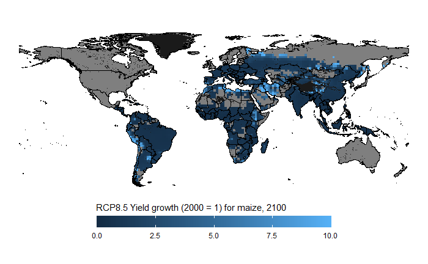

rglobiom5.RmdGLOBIOM input and output is often available at LUID or SIMU level in raster format. This vignette shows how to produce a map using this type of data.
The approach is very similar to producing the 30 region map so we will only provide a brief example here using LUID level data.
library(gdxrrw)
library(ggplot2)
library(sf)
library(dplyr)
library(rworldmap)
library(rglobiom)
# Load the world map
world_poly <- getMap(resolution="low")
# Convert it to the sf format and remove Antartica
world_poly <- st_as_sf(world_poly) %>%
filter(ISO_A3 != "ATA")
# Link gams
gams_path <- "c:/GAMS/win64/25.0"
igdx(gams_path)
# Load LUID level data, in this case climate shocks produced by LPJmL for ISIMIP
globiom_path <- "P:/globiom"
file <- file.path(globiom_path, "Data/ClimateChangeShocks/cc_LPJmL.gdx")
symbol <- "ISIMIP_CC_Impact_Data"
yld_shocks <- rgdx.param(file, symbol)
x <- yld_shocks
x <- x %>% setNames(c("country", "luid", "item", "ALLTECH", "variable", "rcp", "gcm", "crop_model", "resolution", "year", "value"))
yld_shocks <- x
# Load the LUID map
luid_map <- read_sf(file.path(globiom_path, "Data/simu_luid_region_maps/LUId/LUID_CTY.shp")) %>%
setNames(c("country", "luid", "geometry"))
# We filter out yield shocks (YLDG) for subsistence (SS) Corn in 2100 produced HadGEM2-ES
# assuming rpc8.5
df <- yld_shocks %>%
filter(year == "2100", ALLTECH == "SS", item == "Corn", variable == "YLDG", gcm == "HadGEM2-ES", rcp == "rcp8p5")
# We join the map and the data
df <- left_join(luid_map, df)
# Create the map
# We added a grey background map that will show LUIDs with for which no data is available
# To make sure that the boundaries of the countries are on top of the LUID information,
# We added a second world_poly layer
ggplot() +
geom_sf(data = world_poly, fill = "grey10", colour = "black") +
geom_sf(data = df, aes(fill = value), colour = "transparent") +
geom_sf(data = world_poly, fill = "transparent", colour = "black") +
theme_void() +
labs(fill = "RCP8.5 Yield shocks for maize, 2100") +
theme(legend.position = "bottom") +
scale_fill_continuous(limits = c(0,10), breaks = c(0, 2.5, 5, 7.5, 10),
guide = guide_colourbar(nbin=100, draw.ulim = FALSE, draw.llim = FALSE,
title.position = "top", barwidth = 20, barheight = 1))